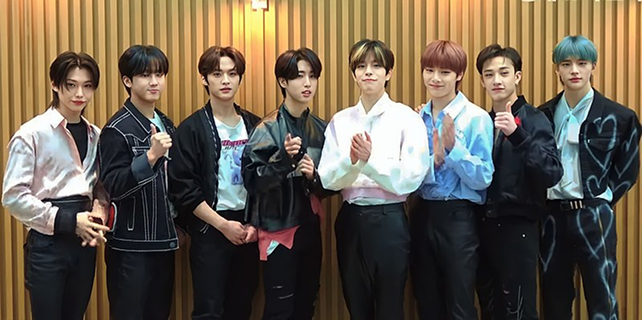

Stray Kids é um grupo sul-coreano formado em 2017 pela JYP Entertainment. Eles debutaram em março de 2018 e são conhecidos por seu estilo musical único e por escreverem muitas de suas próprias músicas. O grupo é composto por oito membros, sendo Bang Chan o líder. Stray Kids conquistou reconhecimento significativo na indústria do K-pop e tem uma base de fãs chamada "STAY".
God’ Menu
Thunderous
Walkin on Water
LALALALA
GIANT
Chk Chk Boom
Essas músicas têm ajudado o Stray Kids a expandir sua popularidade em mercados fora da Coreia do Sul, atraindo novos fãs e aumentando sua presença a global.
Desenvolvido por Taynara Carvalho